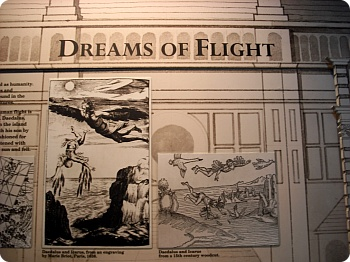
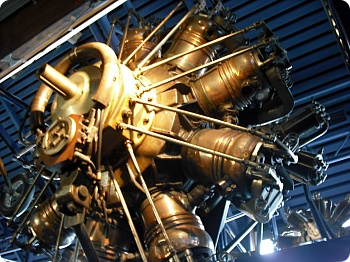
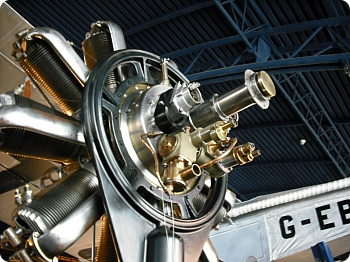
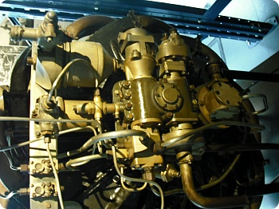
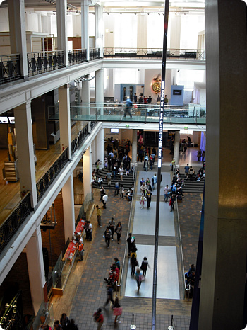
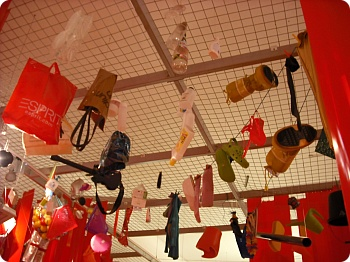
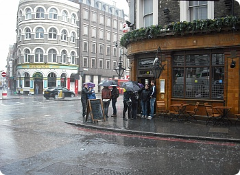
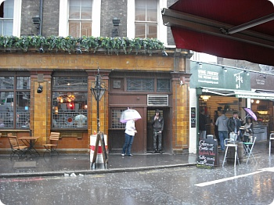
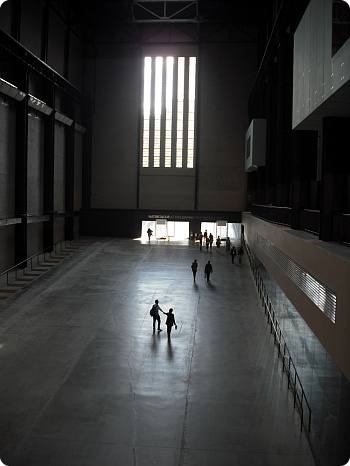
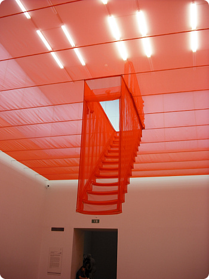

요며칠 정말 날씨가미친다면 이런모습일게야;; 싶은
전에 누가말했던 '미친년널뛰는것같은날씨'의 연속;;;;;;
M군과 이럴때 바깥나들이는 무리고
갤러리/박물관 투워를 하자!!! 싶어서
토요일날 런던사이언스뮤지엄/테이트모던을 가기로 결정
south kensington역에서 바로연결되는 출구가있는것도 모르고
항상 이용하는쪽으로 나와서
히스토리뮤지엄을 지나 주변을 빙글빙글 돈 두사람...OTL

내가 젤 싱났던곳은 Flight관 +_+



비행기 내부엔진 전시해놓은곳
2학년때 프로젝트하면서 미친듯이
기계내부/머신 사진 찾아다녔던 기억과 함께
자료사진이다아아~~!!!를 외치며 열씨히 사진을 찍어대었음^^;;

방학을맞아 부모님과함께 온 아가들
단체관광객들로 무진장 붐볐음;ㅂ;

사이언스 뮤지엄에서 오후5시반쯤 나와서
테이트를 갈려구 런던브리지 쪽으로 이동
2시반쯤 만났을때는 비그치고 개었다고 좋아하고
사이언스 뮤지엄 들어가기 직전에
흐려지고 날씨어두워졌지만 비는 안와서
날씨 시원해서 좋네~라고 말했구
런던브리지 도착해서 지상으로 올라오니


비가 미친듯이 퍼붓고 있었다 ㅡㅡ;;;;
정말이러기야;ㅂ;
사람들 대부분 근처 레스토랑이나 가게안으로 대피한 상황
+ 둘다 아침잘 안먹고 배고픈걸 한계까지 참는편이라
(정말 미련하기도 하지 ㅡㅡ;;;;)
오후6시가 넘은시간에 하루종일 두명이서 먹은거라곤
시리얼바 하나 / 스타벅스 카푸치노 한잔 / 생수한통...OTL
갤러리고 뭐고 배부터 채우자 해서^^;;;;
저 비속을 뚫고 레스토랑을 찾기시작;;;;;
런던브리지 역은 자주가는편이 아니라
주변에 뭐가있는지도 모르겠고
비는 미친듯이 내리고;;;
아무데나 들어갈까? 하는순간 거짓말처럼 비가 그쳤다 ㅡㅡ;;;
그래서 얼쑤좋다구나~하믄서 테이트쪽으로 걸어가다가
와가마마 발견+_+ 라면이랑 우동시켜서 정신없이 해치웠음^^;;
그러고보니 얘랑 밥먹을때 항상 아시아푸드야 ㅋㅋㅋㅋㅋㅋㅋㅋㅋ
(자기는 영국음식 넘 heavy해서 싫단다;; 영국애가 ㅋㅋㅋㅋ)

오랜만의 Tate 입니다~와아~♬
갤러리 열심히 돌고 가만생각해보니
오후2시부터~밤9시까지 밥먹은 시간빼고는 계속 서있거나 걸어댕겨서
급격한 체력저하로 골골거리믄서 집에돌아왔음
그래도 무엇보다 기뻤던건
사이언스 뮤지엄의 Flight관 //▽//
오랜만에 투워잘하고 왔숩니다~

tate에서 굉장히 맘에들었던 작품
알고봤더니 한국작가더라
뉴욕에 있는 자기집 계단을 보고 만든거라고
예상치못한 각도에서 보는 계단과 바닥이 정말 새로웠다+_+